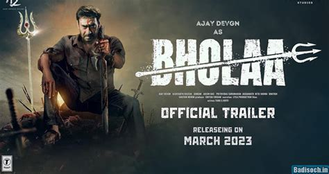

John Wick :Chapter-3
John Wick: Chapter 3- Parabellum (or simply John Wick: Chapter 3) is a 2019 American neo-noir action thriller film directed by Chad Stahelski from a screenplay by Derek Kolstad, Shay Hatten, Chris Collins, and Marc Abrams, based on a story by Kolstad. The film is the sequel to John Wick: Chapter 2 (2017) and the third installment in the John Wick franchise. It stars Keanu Reeves as the eponymous character, alongside an ensemble supporting cast including Halle Berry, Laurence Fishburne, Mark Dacascos, Asia Kate Dillon, Lance Reddick, Anjelica Huston, and Ian McShane. The film centers on John Wick going on the run from a legion of hitmen after a bounty is placed for his murder.

Bholaa
Bholaa is a 2023 Indian Hindi-language action-adventure film directed by Ajay Devgn and jointly produced by Ajay Devgn FFilms, Reliance Entertainment, T-Series Films and Dream Warrior Pictures. It is a remake of the 2019 Tamil film Kaithi and stars Devgn in the titular role alongside Tabu, Deepak Dobriyal, Sanjay Mishra, Gajraj Rao and Vineet Kumar while Amala Paul, Abhishek Bachchan and Raai Laxmi make special appearances. The film follows an ex-convict who battles criminals while transporting a truck full of poisoned cops to the hospital in exchange for meeting his daughter after ten years of imprisonment.
Avatar: The Way of Water
Avatar: The Way of Water is a 2022 American epic science fiction film directed and produced by James Cameron. He co-wrote the screenplay with Rick Jaffa and Amanda Silver from a story the trio wrote with Josh Friedman and Shane Salerno. Distributed by 20th Century Studios, it is the sequel to Avatar (2009) and the second installment in the Avatar film series. Cast members Sam Worthington, Zoe Saldaña, Stephen Lang, Joel David Moore, CCH Pounder, Giovanni Ribisi, Dileep Rao, and Matt Gerald reprise their roles from the original film, with Sigourney Weaver returning in an additional role[6] while Kate Winslet joined the cast. It follows a blue-skinned humanoid Na'vi named Jake Sully (Worthington) as he and his family, under renewed human threat, seek refuge with the aquatic Metkayina clan of Pandora, a habitable exomoon on which they live.
© 2210990429